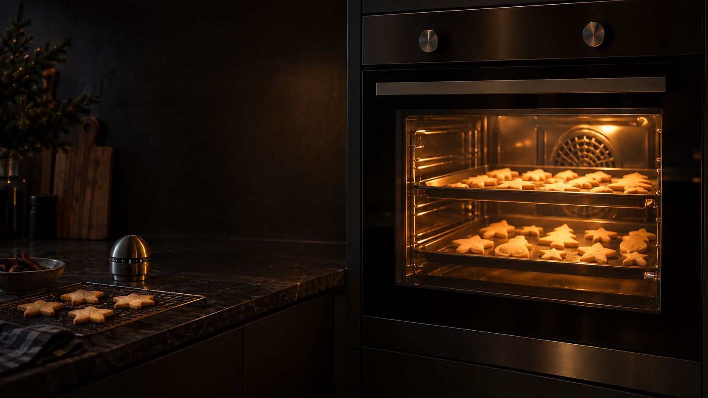

Plätzchen backen mit wenig Strom
Was der Backofen in der Weihnachtsbäckerei wirklich kostet, warum du selten vorheizen musst und wie du mit Umluft mehrere Bleche auf einmal backst.
Ein Backofen braucht bei 200 °C laut EnBW etwa 1,5 bis 2 kWh pro Stunde, ein Blech Plätzchen kostet also nur wenige Cent. Am meisten sparst du, wenn du nicht vorheizt (laut Verbraucherzentrale bis zu 20 Prozent), mit Umluft 20 bis 30 °C niedriger und auf zwei oder drei Blechen gleichzeitig backst und die Tür geschlossen lässt.
Was der Backofen braucht.
Ein Elektro-Backofen ist einer der größten Verbraucher in der Küche. Gerechnet mit 32 ct pro kWh.
Durchschnitt laut EnBW. Ein sparsamer Ofen braucht laut Verbraucherzentrale unter 0,9 kWh für einen genormten Backvorgang.
So viel sparst du laut Verbraucherzentrale, wenn du nicht vorheizt. Das Aufheizen dauert sonst 10 bis 15 Minuten.
Wer oft nachschaut, verliert laut EnBW rund ein Fünftel der Wärme, die der Ofen nachheizen muss.
Was kostet deine Weihnachtsbäckerei?
Stell ein, wie viele Bleche du backst und wie viele davon gleichzeitig in den Ofen passen.
So rechnen wir
Durchgänge = Bleche geteilt durch Bleche gleichzeitig (aufgerundet). Strom = (Durchgänge × Backzeit + Backtage mit Vorheizen × 12 Minuten) × 1,5 kWh pro Stunde. Zum Vergleich: jedes Blech einzeln, vorgeheizt an einem Backtag je 4 Bleche. Die 1,5 kWh sind das untere Ende des EnBW-Werts für 200 °C; mit Umluft bei 20 bis 30 °C weniger liegt dein Ofen eher darunter, ein älterer Ofen darüber. Weil der Ofen meist fest angeschlossen ist, misst ihn ein Steckdosen-Messgerät nicht; den Wert je Backvorgang zeigt das Energielabel.
7 Tipps für die Weihnachtsbäckerei.
Die meisten kosten nichts und machen die Plätzchen nicht schlechter.
Nicht vorheizen
Spart laut Verbraucherzentrale bis zu 20 Prozent. Plätzchen brauchen dann ein, zwei Minuten länger. Ausnahmen: Blätterteig, Biskuit und Soufflés.
Umluft statt Ober-/Unterhitze
Mit Umluft oder Heißluft reichen 20 bis 30 °C weniger, und du backst auf mehreren Ebenen gleichzeitig. Statt 180 °C also etwa 160 °C.
Zwei oder drei Bleche auf einmal
Bei Umluft halbiert ein zweites Blech die Zahl der Durchgänge. Teig vorher für mehrere Sorten vorbereiten, dann läuft der Ofen nur einmal.
Hintereinander backen
Plane alle Bleche an einem Nachmittag, solange der Ofen warm ist. Jeder neue Backtag heizt den kalten Ofen wieder auf.
Tür zu lassen
Durchs Sichtfenster mit Licht schauen statt aufzumachen. Häufiges Öffnen kostet laut EnBW rund ein Fünftel der Wärme.
Restwärme nutzen
Den Ofen ein paar Minuten vor Schluss ausschalten. Laut Verbraucherzentrale lässt sich die Restwärme bis zu 15 Minuten zum Fertiggaren nutzen, beim letzten Blech ideal.
Pyrolyse sparsam nutzen
Die Selbstreinigung heizt auf über 500 °C und kostet laut Verbraucherzentrale bis zu 1,30 € pro Durchgang. Backpapier oder eine Dauerbackfolie halten das Blech sauber.
Was beim Kochen auf dem Herd spart, steht im Ratgeber Kochen mit wenig Strom.
Airfryer und Mini-Ofen.
Für kleine Mengen ist ein großer Backofen oft zu viel. Eine Heißluftfritteuse ist laut Stiftung Warentest sparsamer als ein herkömmlicher Backofen, die Unterschiede zwischen den Modellen sind aber groß: Das teuerste Gerät im Test verursachte mehr als doppelt so hohe Stromkosten wie das sparsamste.
Für Plätzchen taugt der Airfryer wenig, weil nur wenige Stück hineinpassen. Für ein paar Aufbackbrötchen oder einen kleinen Rest lohnt er sich eher. Ein Mini-Backofen kann laut Verbraucherzentrale in derselben Effizienzklasse liegen wie ein großer Ofen, entscheidend ist der tatsächliche Verbrauch. Brötchen werden auf dem Toaster mit Aufsatz am sparsamsten wieder knusprig.
Woran du einen sparsamen Backofen erkennst.
Backöfen tragen noch das alte Energielabel mit Plus-Klassen bis A+++. Im Handel findest du vor allem A und A+, A++ und A+++ kaum. Ein Gerät mit A kann laut Verbraucherzentrale bis zu 30 Prozent mehr Strom brauchen als eines mit A+. Die sparsamsten Öfen mit 45 bis 65 Litern brauchen unter 0,9 kWh je genormtem Backvorgang.
Achte außerdem auf eine dreifach verglaste Tür, die die Wärme besser hält. Energiesparprogramme bringen laut Stiftung Warentest nur 2 bis 5 Prozent. Wie du das Label liest und ob sich ein Tausch rechnet, zeigt der Ratgeber Energielabel.
Was hilft.
Die Links führen zu einer Suche bei Amazon.Anzeige
Kurz beantwortet.
Was kostet eine Stunde Backofen?
Bei 200 °C braucht ein Backofen laut EnBW im Schnitt 1,5 bis 2 kWh pro Stunde. Bei 32 ct pro kWh sind das rund 50 bis 65 ct.
Muss ich für Plätzchen vorheizen?
Meist nicht. Ohne Vorheizen sparst du laut Verbraucherzentrale bis zu 20 Prozent Energie, die Plätzchen brauchen nur etwas länger. Vorheizen lohnt sich bei Blätterteig, Biskuit und Soufflés.
Umluft oder Ober-/Unterhitze für Plätzchen?
Umluft. Du kannst die Temperatur um 20 bis 30 °C senken und mehrere Bleche gleichzeitig backen. Steht im Rezept 180 °C Ober-/Unterhitze, nimm etwa 160 °C Umluft.
Wie lange hält die Restwärme?
Laut Verbraucherzentrale lässt sich der Ofen nach dem Ausschalten noch bis zu 15 Minuten zum Fertiggaren nutzen. Für Plätzchen reicht es, ein paar Minuten vor Ende auszuschalten.
Ist die Heißluftfritteuse sparsamer als der Backofen?
Für kleine Mengen ja, sagt Stiftung Warentest. Für viele Bleche Plätzchen ist der Backofen mit Umluft praktischer, weil viel mehr auf einmal hineinpasst.
- Verbraucherzentrale: Backofen – darauf sollten Sie bei Kauf und Nutzung achten (Stand 13.08.2025) verbraucherzentrale.de
- EnBW: Energie sparen in der Küche – clevere Stromspar-Tipps (Stand 11.09.2026) enbw.com
- Stiftung Warentest: Heißluftfritteusen im Test (Stand 05.10.2026) test.de
Allgemeine Informationen ohne Gewähr. Geprüft am 09.11.2026.